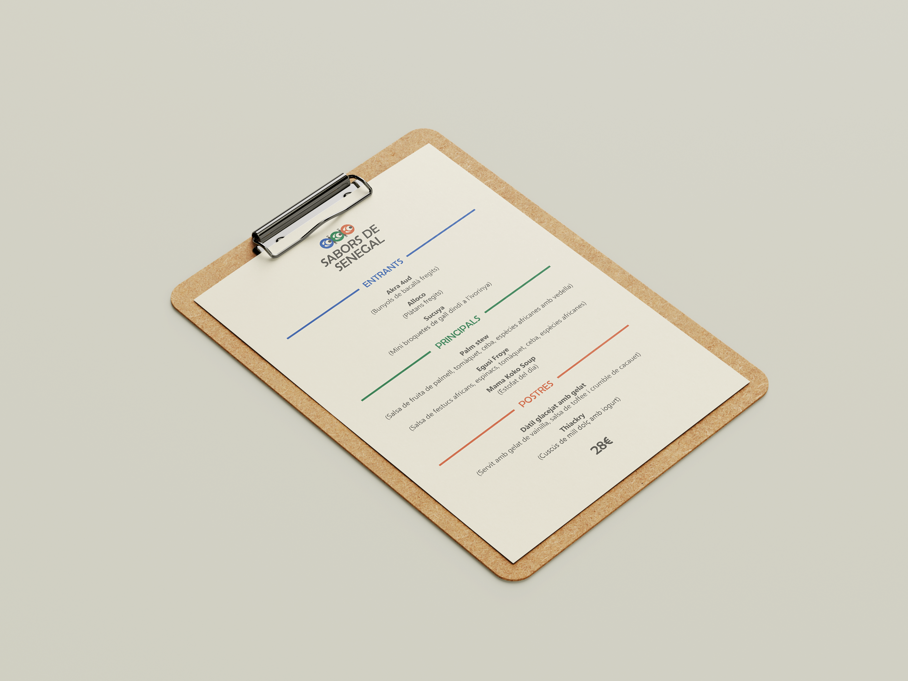
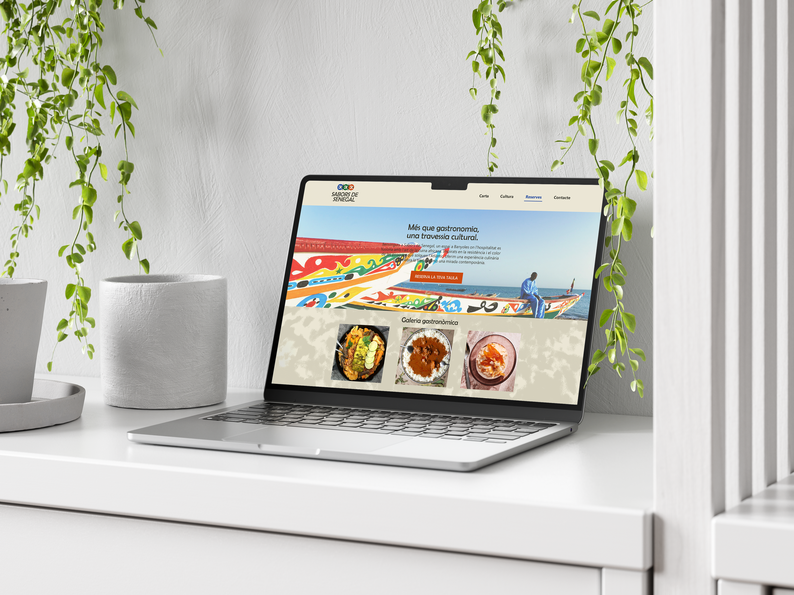
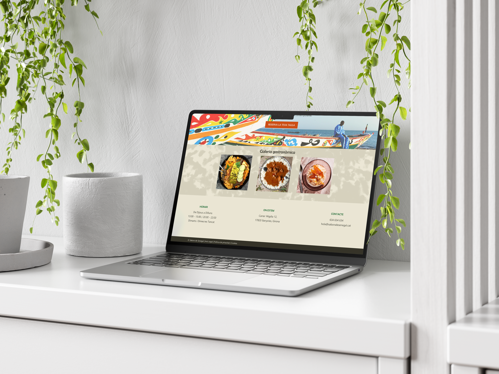

Sabors de Senegal
2026
CC BY-NC-SA 4.0
Disseny de la identitat visual i paleta de color. “Disseny de la identitat visual i paleta de color per a un restaurant de gastronomia del Senegal. Desenvolupament del disseny de tres peces gràfiques: targeta de visita, carta del menú i landing page de la web.”
A l'hora de plantejar la paleta de color i les peces de disseny també s'ha tingut en compte el target al qual es dirigeix el restaurant:
- Dones, homes i no-binaries d'entre 25 i 50 anys.
- Nivell econòmic mitjà.
- Nivell cultural mig-alt.
- És un tipus de consumidor/a molt actiu/va en les seves relacions socials i al qual li interessa consumir activitats culturals.



